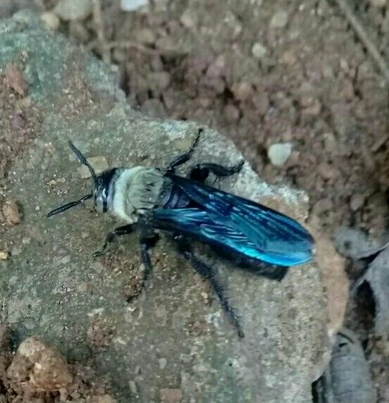

कॉलर्ड स्कोलियिड वास्पCollared Scoliid Wasp
Campsomeriella collaris · Scoliidae · INS-0247

- Scientific name वैज्ञानिक नाम
- Campsomeriella collaris (Fabricius, 1775)
- Family कुल
- Scoliidae
- Hindi हिंदी
- कॉलर्ड स्कोलियिड वास्प
- Local names स्थानीय नाम
- collared scoliid wasp, collar scoliid tataiya, campsomeriella collaris, white-collared hairy wasp
- Status here यहाँ की स्थिति
- native
- Movement आवागमन
- Resident, here all year
- Known from कहाँ दर्ज
- Others have published records from the wider Awadh–Purvanchal plain, none yet from Basti–Ayodhya अवध–पूर्वांचल से दूसरों के प्रकाशित अभिलेख, बस्ती–अयोध्या से अभी नहीं
- IUCN IUCN
- not evaluated
- Review समीक्षा
- not yet reviewed
When to look कब देखें
Expected mainly in June, July, August, September, October, November. मुख्यतः जून, जुलाई, अगस्त, सितंबर, अक्टूबर, नवंबर में अपेक्षित।
कॉलर्ड स्कोलियिड वास्प / Collared Scoliid Wasp
Campsomeriella collaris (Fabricius, 1775) — Scoliidae
कॉलर्ड स्कोलियिड वास्प — खेतों और घास के मैदानों में जमीन के ठीक ऊपर मंडराने वाली एक रोएंदार काली ततैया। मादा के सीने पर सफेद बालों का एक विशिष्ट कॉलर जैसा पट्टा होता है और पंख चमकीले नीले-काले होते हैं। यह जमीन के नीचे रहने वाले हानिकारक गोबरैले कीटों के बच्चों (सफेद ग्रब) पर अंडे देकर उनका खात्मा करती है।
Quick Identification त्वरित पहचान
| Feature | Description |
|---|---|
| Habit | Robust, densely hairy ground-hunting parasitoid wasp with marked sexual dimorphism |
| Female | Velvety black body with a conspicuous thick collar of white hairs on the pronotum |
| Male | Slender body with yellow bands on the abdominal tergites and long cylindrical antennae |
| Wings | Deep smoky blackish-brown with metallic violet and blue reflections in females |
| Legs | Heavily spined and fossorial, adapted for burrowing deeply through soil |
Field tip: Look low over sandy pasture or weed patches in late morning for large black wasps hovering just above the grass or resting on yellow composite flowers.
हिंदी — कैसे पहचानें: रोएंदार काला शरीर, सीने पर सफेद बालों का कॉलर, गहरे नीले-काले पंख, और जमीन के पास मंडराने की आदत।
Morphology आकारिकी
Adult description: Strongly dimorphic, robust solitary wasp. Female with head broad, heavily punctured; vertex shining; clypeus coarsely rugose. Pronotum, anterior margin of mesoscutum, and front of propleura covered with dense, erect silvery-white to yellowish-white pubescence forming a conspicuous collar. Rest of body deep velvety jet-black. Legs very stout, femora and tibiae heavily armed with thick fossorial spines and coarse setae. Wings fuliginous with rich purplish-violet reflections; apical margins longitudinally wrinkled. Male noticeably more slender, lacking the white collar, exhibiting yellow bands on metasomal segments.
हिंदी: मादा का शरीर भारी और मखमली काला होता है जिसके सीने पर सफेद बालों की पट्टी होती है।
Behaviour & Ecology व्यवहार और पारिस्थितिकी
- Fossorial Hunting: Females detect underground scarab beetle grubs by sensing chemical kairomones and soil vibrations, digging down through loose sand with spiny legs.
- Subterranean Parasitism: Stings the subterranean grub into permanent paralysis, shapes a small subterranean cell around it, and attaches a single egg to the host's venter.
- Low Patrol Flights: Males fly figure-eight patrol patterns just inches above vegetation tops in sunny mornings searching for emerging females.
- Flower Feeding: Both sexes spend hours perched quietly on blossoms sipping nectar to fuel their energetic burrowing and flying.
हिंदी: मादा जमीन खोदकर नीचे रहने वाली सफेद इल्लियों को ढूंढती है और उन्हें डंक मारकर पंगु बना देती है ताकि उन पर अंडा दे सके।
Life Cycle / Phenology जीवन चक्र
- Egg Stage: The egg is attached to the paralyzed scarab larva beneath the soil surface and hatches in a few days.
- Larval Development: The parasitoid grub feeds externally on the body fluids of the living host, consuming it completely within a couple of weeks.
- Cocoon Formation: Spins an extremely tough, multi-layered brown cylindrical silk cocoon in the subterranean earthen chamber.
- Adult Emergence: Emergence is synchronized with the monsoon rains when soil becomes moist and scarabaeid grubs are plentiful.
हिंदी: अंडा जमीन के अंदर ग्रब पर दिया जाता है। ततैया का बच्चा ग्रब को बाहर से खाकर बड़ा होता है और मानसून में निकलता है।
Host Plants or Prey आहार
- Host Grubs: Soil-dwelling larvae of phytophagous scarabaeid beetles, particularly cockchafers (Holotrichia) and rhinoceros beetles.
- Adult Floral Diet: Nectar of wild composites, aster blossoms, and agricultural weeds like dhaincha and wild mustards.
- Water Consumption: Sips morning dew and nectar droplets from foliage.
हिंदी: इसके बच्चे जमीन के नीचे फसलों की जड़ें खाने वाले गोबरैलों के ग्रब को खाते हैं। वयस्क फूलों का मकरंद पीते हैं।
Predators / Natural Enemies शत्रु
- Avian Predators: Blue-tailed and green bee-eaters, black drongos, and insectivorous shrikes.
- Lizards: Ground-dwelling Indian garden lizards wait near blooming weed heads to capture foraging wasps.
- Robber Flies: Large Asilidae ambush flying scoliids along sunlit field borders.
हिंदी: बगुले, भुजंगा और शिकारी मक्खियां इन्हें खेतों की मेड़ों पर पकड़ लेते हैं।
Agricultural / Human Relevance कृषि प्रासंगिकता
- Biological Pest Management: Exceptionally beneficial insect in agriculture; natural biocontrol agent against subterranean white grubs that damage sugarcane, groundnut, and cereal roots.
- Pollination Service: Regular visitor of open-faced wildflowers, transferring pollen across agricultural fields.
- Non-Aggressive Nature: Solitary and docile toward humans; has no defensive nest to protect and will only sting if stepped on with bare feet.
हिंदी: यह किसानों के लिए अत्यंत लाभकारी मित्र कीट है जो गन्ने और फसलों की जड़ों को काटने वाले सफेद कीड़ों (ग्रब) को खत्म करता है।
Expected Locally स्थानीय रूप से अपेक्षित
Not a field record. Written from published accounts for eastern Uttar Pradesh. No confirmed local sighting yet — if you have seen it, that is what the atlas needs.
अभी तक स्थानीय पुष्टि नहीं। यह विवरण प्रकाशित स्रोतों से है, किसी अवलोकन से नहीं।
Expected across rural settlements, agricultural groves, gardens, and scrublands of Basti, Ayodhya, and neighbouring Awadh districts. GBIF holds published records from the wider Awadh–Purvanchal plain, none yet from Basti–Ayodhya. To confirm this species for the Atlas, provide a clear photograph showing key field characters, along with date, time, and specific location.
Distribution वितरण
Global range: Native across South Asia, Southeast Asia, and adjacent parts of the Oriental region.
In India: Widely distributed across peninsular India, the central plains, and the Gangetic basin.
In Uttar Pradesh: Recorded across farmland and riverine grasslands from Gorakhpur, Lucknow, and Prayagraj.
In Basti district / eastern UP: Expected along sandy river terraces of the Ghaghara and Kuwana, and in sugarcane and pulses fields around Basti.
हिंदी: यह ततैया पूरे भारत और दक्षिण एशिया के मैदानी इलाकों में पाई जाती है। उत्तर प्रदेश के बलुई खेतों में यह आम है।
Research Questions शोध प्रश्न
- Which scarab grub species is the primary host of Campsomeriella collaris in Basti sugarcane fields? / बस्ती के गन्ना खेतों में यह ततैया मुख्य रूप से किस प्रजाति के ग्रब पर परजीवी बनती है?
- How does heavy tractor ploughing influence the subterranean survival of overwintering cocoons? / ट्रैक्टर से गहरी जुताई करने पर जमीन में दबे इसके कोकून पर क्या असर पड़ता है?
- What floral species provide the highest nectar concentration for female foraging flights in Awadh? / अवध के खेतों में किस खरपतवार के फूल इस ततैया को सबसे ज्यादा मकरंद देते हैं?
- Does pesticide spraying against white grubs inadvertently decimate this beneficial parasitoid? / क्या कीटनाशकों के छिड़काव से इस मित्र कीट की संख्या घट रही है?
- How does soil moisture from monsoon rain trigger the synchronous emergence of adult wasps? / मानसून की बारिश से मिट्टी गीली होने पर ये ततैये एक साथ बाहर कैसे निकलते हैं?
Similar Species मिलती-जुलती प्रजातियाँ
| Species | How to tell apart | हिंदी |
|---|---|---|
| Scolia affinis | Head and pronotum entirely black without a white collar; reddish spots on gaster | सीने पर कोई सफेद कॉलर नहीं, पेट पर लाल धब्बे |
| Megascolia azurea | Vastly larger body with orange-yellow head and four giant orange abdominal spots | बहुत बड़ा आकार, नारंगी सिर और पेट पर चार बड़े नारंगी धब्बे |
| Micromeriella marginella | Much smaller body size; distinct pale yellow markings on abdominal tergites | काफी छोटा शरीर और पेट पर हल्के पीले रंग की धारियां |
Field rule: A stout velvety-black wasp with a conspicuous collar of dense white hairs behind the head hovering low over open soil identifies female Campsomeriella collaris.
Taxonomy & Classification वर्गीकरण
Original description. Described by Johan Christian Fabricius in 1775 as Scolia collaris in Systema Entomologiae, sistens insectorum classes, ordines, genera, species, Flensburgi et Lipsiae.
Subspecies. Campsomeriella collaris is the nominate subspecies widely distributed across the Indian subcontinent.
Family and order placement. Placed in the family Scoliidae, subfamily Campsomerinae, in the order Hymenoptera.
IUCN status rationale. Not evaluated by the IUCN; widespread, common, and resilient across agricultural landscapes in India.
हिंदी: फैब्रिकियस ने 1775 में इसका वैज्ञानिक विवरण दिया था। यह स्कोलियिडी कुल की एक लाभकारी परजीवी ततैया है।
Photo Gallery फोटो गैलरी
No photos yet — add field photos to media/species/collared_scoliid_wasp/ and run node scripts/sync_photos.js.
Photos needed आवश्यक फोटो
- [ ] Female perched on a composite flower showing white collar (सफेद कॉलर दिखाती फूल पर बैठी मादा ततैया)
- [ ] Male showing slender body and yellow abdominal bands (पीली धारियों वाला नर ततैया)
- [ ] Adult digging into sandy soil in an agricultural field (खेत में जमीन खोदती ततैया)
References संदर्भ
- Fabricius, J.C. (1775). Systema Entomologiae, sistens insectorum classes, ordines, genera, species, Flensburgi et Lipsiae.
- Bingham, C.T. (1897). The Fauna of British India, including Ceylon and Burma: Hymenoptera, Vol. I. Wasps and Bees, p. 89. Taylor and Francis, London.
- Gupta, S.K. & Jonathan, J.K. (2003). Fauna of India and the Adjacent Countries: Hymenoptera: Scoliidae, p. 277. Zoological Survey of India, Kolkata.
- Betrem, J.G. (1928). Monographie der Indo-Australischen Scoliiden mit zoogeographischen Betrachtungen. Treubia, 9(suppl.), pp. 1–388.
- Krombein, K.V. (1978). Biosystematic studies of Ceylonese wasps. Smithsonian Contributions to Zoology, 283, pp. 1–56.
- GBIF Occurrence Data — Campsomeriella collaris (Fabricius, 1775), India (2025).
Source file: species/fauna/insects/collared_scoliid_wasp.md